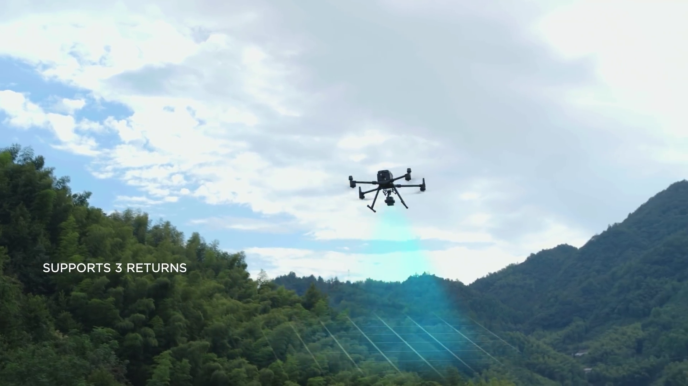
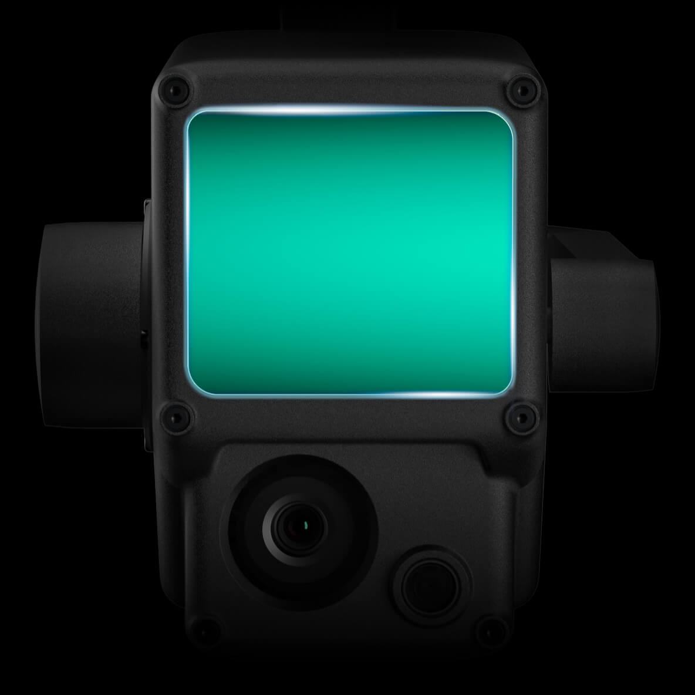

Lidar Drone Surveying
in Costa Rica
Costa Rica's specialists in lidar drone surveys, topographic mapping, aerial video & photography. Centimeter-accurate data for real estate, construction, and agriculture.
Our Services
Lidar Drone Surveying

Our lidar drones use laser scanning to capture terrain data with centimeter accuracy — penetrating forest canopy to map the true ground surface beneath.
Learn About Lidar SurveyingAerial Video & Photography

Professional 4K aerial video and high-resolution drone photography for real estate listings, construction progress, property marketing, and promotional content across Costa Rica.
Get a Video QuoteGPS Geopositioning

We use a GPS RTK base station to determine the exact geographic coordinates of any location — essential for precise boundary and topographic surveys.
Learn About GPS GeopositioningThe Future Aerial Surveying
We offer the latest technology in aerial surveying drone equipment to make capturing any size of land very easy and automates the process to be able to make it repetitive. We are able to scan any environment & give you centimeter-accurate 3d rendering that can be used to measure, map, and modify it in the virtual world.
Work Flow
Virtual Mission Planning

Our mission plan software allows us to create a virtual plan to visualize the drones flight path & run time
Flight Mission Execution

We then dispatch our team to execute the planned mission to capture the photo and lidar data to create cm accuracy 3d mapping environments
Capture, Analyze, Visualize

After capturing all the data we analyze it with our software to create high quality 3D photogrammetry & topographic maps
Getting started is
very easy with us
To get started simply click the button below to fill in our online service request with your information, the location & the size of the project & we will email you a quote.
GET A QUOTE NOWStep 1: Request a quote
It takes 5 minutes to fill out our online form and receive a free quote of the project you're submitting
Step 2: Select date & Sign Contract
Once the quote has been agreed on, you can submit the execution date. We then create a contract & invoice that is emailed & a 50% deposit is required on signature.
Step 3: Mission Execution & Data Processing
After the contract is signed, the date is locked in & the mission will be executed as long as weather permits. Once the map data is captured then the balance of the contract is due. Once payment is received the mapping data is sent to the client.

Centimeter Accuracy Mapping
The Zenmuse L1 integrates a Livox Lidar module, a high-accuracy IMU, and a camera with a 1-inch CMOS on a 3-axis stabilized gimbal.
3 Returns
Lidar laser coverage
240,000 pts
Lidar Point Rate
Want to talk to a real human and ask us questions over phone
Lidar drone technology is new & most people are just learning about it and may have lots of questions about it. We are experts in our domain for 7 years and we are happy to field any questions or concerns you may have before working with us.
TALK TO US NOW!We are goal driven
Autonomous Workflow
Expert Team of Pilots
Accurate & Precise Surveying
Connect with us
We want to make it easy and simple to work with us so we give you 2 choices to choose from. Get a free quote online by filling out our service request form or book a meeting on the phone to start & let us call you when you want
What Our Clients Say
⭐⭐⭐⭐⭐ 5.0 out of 5 · 25 Google reviews
★★★★★
"Drone Survey Costa Rica did an amazing job with drone LiDAR for one of my listings. Professional, reliable, and easy to work with. The quality of the survey was excellent — precise data that was incredibly useful."
Travis Comstock
Real Estate Agent · Costa Rica
★★★★★
"I've used Drone Survey Costa Rica for the past 2 years on 20+ occasions. Very professional and the amount of data you get from the Lidar for land planning, engineering, and design is incredible. The best tool a developer or land owner could use."
Javier Mora Balma
Land Developer · Costa Rica
★★★★★
"Very easy to work with and very professional. We booked via their website, received a quote by email, and they came to fly the drone at our new property. We were able to download all our files easily. Great service — I would recommend them to everyone."
Nick Iversen
Property Owner · Local Guide
Industries We Serve in Costa Rica
Our drone survey services are trusted by professionals across Costa Rica's key industries.
🏡 Real Estate Surveys
3D property models, topographic maps, and boundary surveys for land transactions.
🏗️ Construction Monitoring
Track progress, calculate volumes, and verify as-built conditions on your construction site.
🌱 Agriculture Mapping
Terrain analysis, drainage planning, and crop monitoring for Costa Rica's farms and plantations.
🎬 Aerial Video & Photos
4K aerial video and photography for property marketing, construction documentation, and promotions.
Frequently Asked Questions
How much does a drone survey cost in Costa Rica?
Our surveys start at $1,000 USD for up to 5 hectares — this includes the flight, GPS base station, full data processing, and all deliverables. Each additional hectare beyond 5 is $80 USD. Travel fees from San José apply. Projects over 100 hectares qualify for special pricing. Get a free quote in minutes.
What is the difference between Lidar and photogrammetry?
Lidar uses laser pulses and can penetrate dense vegetation to map the ground below — ideal for Costa Rica's forested terrain. Photogrammetry uses overlapping aerial photos to create 3D models and is cost-effective for open land. We offer both and will recommend the best option for your project.
How accurate is a drone survey in Costa Rica?
Our drone surveys using the DJI Zenmuse L1 Lidar achieve centimeter-level accuracy (typically 1–3 cm horizontal, 2–5 cm vertical). Combined with our GPS RTK base station, we deliver professional survey data that meets engineering and legal standards in Costa Rica.
How long does a drone survey take?
Field data collection typically takes 2–8 hours depending on the size and terrain. Data processing and delivery of your 3D maps and reports takes 3–7 business days after the flight mission.
Do you survey all regions of Costa Rica?
Yes — we survey all regions of Costa Rica including San José, Guanacaste, the Central Valley, Caribbean coast, Southern Zone, and remote areas. We handle all DGAC drone flight permits required for your project location.